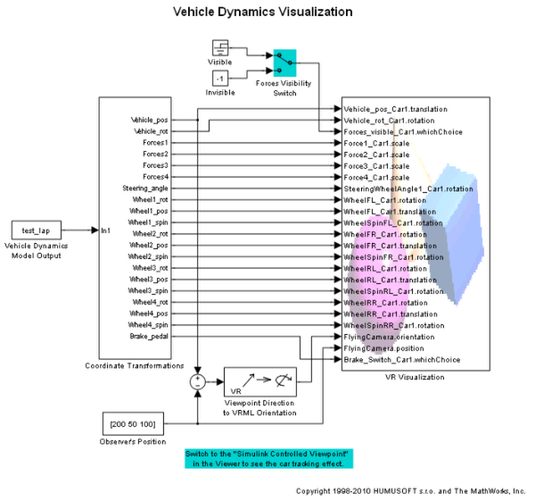
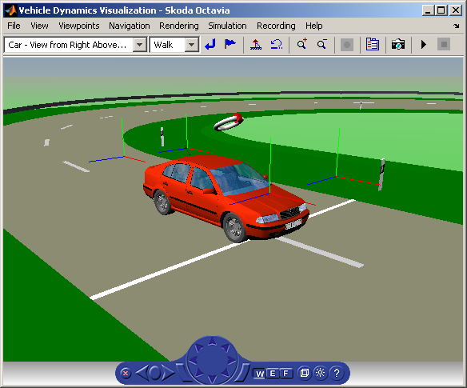

Vehicle Dynamics Visualization
The vr_octavia example shows the benefits of visualization of complex dynamic model in the virtual reality environment. It also demonstrates Simulink® 3D Animation™ 3D off-line animation recording functionality.
The pre-computed simulation data, representing one lap of a vehicle on a testing circuit, is converted from dynamic model signal structure into the form that can be sent to the virtual reality scene. This conversion includes splitting the combined signals into signals governing individual VRML objects properties and coordinate systems transformations. The data is then sent to the virtual reality scene using VR Sink block with sample rate 25 Hz.
The dynamic model provides not only signals that influence visual properties of objects (positions and rotations), but also forces and other similar quantities, that can be visualized as well. In this example, wheel forces are visualized using VRML triads scaled dynamically according to current force values. Force triads can be switched off by the Forces Visibility Switch.
When working with virtual reality models, there is a common requirement to track certain moving objects with the camera. Usually, the direction from the camera to the object is easily available (both positions are known, so direction from the camera to the object is defined as the difference between the two positions). Because in VRML the viewpoint orientation is defined in the form of 4-element [axis angle] VRML rotation, camera direction must be converted into this format before sending to virtual scene. Simulink 3D Animation provides the Viewpoint Direction to VRML Orientation block to perform this conversion. In this example, switch to the "Simulink Controlled Viewpoint" in the viewer to see the camera tracking effect.
Simulink 3D Animation allows two methods of recording animation files - 2D animation (AVI files) and 3D animation (VRML files). Here we describe how a 3D VRML animation file can be created and further used. In the internal viewer Recording menu select the Capture and Recording Parameters... option.
In the Capture and Recording Parameters dialog, select the Record to VRML checkbox. Leave the File: editbox at its default value. Select the Scheduled Recording mode and specify the time period for which you want to record the offline animation time. Here we record the animation during the entire simulation time defined for this model, you may select any time interval between the Simulink model Start time and Stop time. For details on recording parameters please refer to the product documentation.
Once you define these animation recording parameters, animation file is created automatically when you start the simulation. Unlike with creating the 2D animation files, the internal viewer figure can be minimized during simulation, which significantly speeds up the simulation. At the end of simulation run, the created VRML animation file octavia_scene_anim_1.wrl remains in the working directory for later use.
If you distribute animation files, make sure to also distribute all the inlined object and texture files referenced in the original VRML world file.
In the case of this demonstration example, the following files must be distributed together with the resulting animation file octavia_scene_anim_1.wrl :
* octavia_body.wrl * octavia_road.wrl * /texture/octavia_*.jpg
As the VRML animation file is created by default into the current working directory, and not the Simulink 3D Animation demos directory, you will need to copy all these files to the current working directory to view the off-line animation file correctly.
Viewing VRML off-line animation file:
Let's assume that you want to view the octavia_scene_anim_1.wrl file that is in your current working directory. You can play and inspect this animated file with comfort using the VR Animation Player tool:
vrplay('octavia_scene_anim_1.wrl');You can view the resulting VRML animation file also using Orbisnap, blaxxun Contact or any other generally available VRML97 viewer, or using Simulink 3D Animation Internal Viewer. When using the internal viewer, it is necessary to set the virtual world TimeSource property to freerun to be able to see the animation. Issue the following commands at the MATLAB® command window:
w=vrview('octavia_scene_anim_1.wrl');
set(w, 'TimeSource', 'freerun');A VRML animation file based on this example is pre-recorded in the /vrdemos directory under the following name:
octavia_scene_anim.wrl
Acknowledgements:
Skoda Octavia model copyright Skoda Auto, courtesy of Ismar VR, Czech Republic. Road geometry and simulation data generated using veDYNA by TESIS DYNAware, Germany.
 